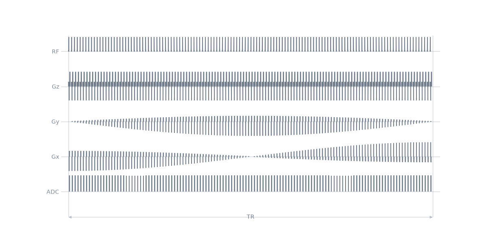
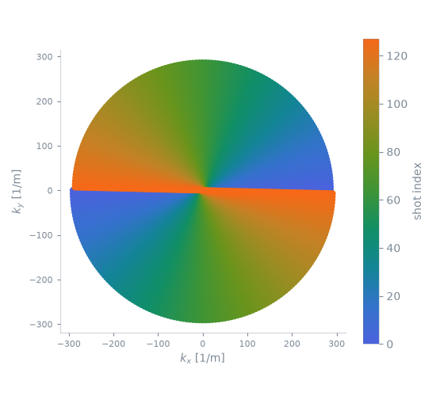
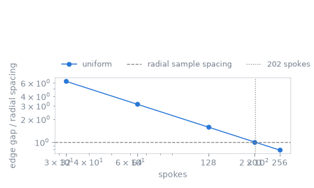
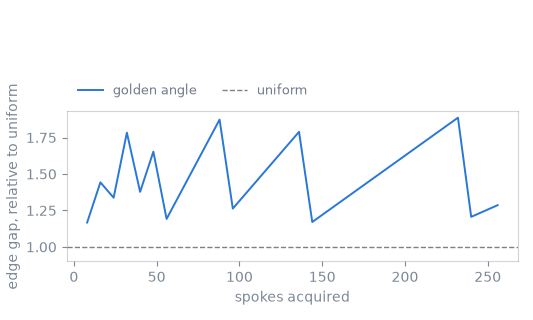

Note
Go to the end to download the full example code.
Radial sampling#
The scope of this notebook is to replace the phase encode of the Cartesian gradient echo with a rotation of the readout itself, so that every repetition acquires a spoke through the centre of k-space, and to establish how many spokes such an acquisition needs and what ordering them by the golden angle changes.
The observable is the azimuthal gap between neighbouring spokes at the edge of k-space, measured from the trajectory the sequence produces, against the sample spacing along a spoke that the prescription asks for.
Outline:
A rotated readout. The prewinder and readout of one spoke, rotated into the imaging plane.
One repetition per spoke. The sequence, and the angles it plays.
The trajectory. What the spokes cover, and where they do not.
Spokes against azimuthal gap. The Nyquist requirement, and what undersampling costs.
Golden-angle ordering. The same gap when the acquisition is stopped early.
The Cartesian sequence this is a variation on is Gradient echo.
A rotated readout#
A spoke runs from one edge of k-space through the centre to the other, so the
prewinder carries half the readout area as it does on a Cartesian line, and
the echo is at the middle of the acquisition window. The pair is then rotated
about the slice axis by the angle of the spoke, which
rotate() does by resolving each gradient onto the two
in-plane axes.
import numpy as np
import pypulseqpp as pp
system = pp.Opts(
max_grad=32.0,
grad_unit="mT/m",
max_slew=130.0,
slew_unit="T/m/s",
rf_dead_time=100e-6,
rf_ringdown_time=20e-6,
adc_dead_time=10e-6,
)
FOV = 220e-3
MATRIX = 128
THICKNESS = 5e-3
FLIP_ANGLE_DEG = 12.0
REPETITION_TIME = 10e-3
DWELL = 10e-6
rf, gz, gz_reph = pp.make_sinc_pulse(
flip_angle=np.deg2rad(FLIP_ANGLE_DEG),
duration=2e-3,
slice_thickness=THICKNESS,
apodization=0.5,
time_bw_product=4.0,
delay=system.rf_dead_time,
system=system,
use="excitation",
return_gz=True,
)
acquisition = MATRIX * DWELL
raster = system.grad_raster_time
gx = pp.make_trapezoid(
channel="x",
amplitude=MATRIX / FOV / acquisition,
flat_time=raster * np.ceil(acquisition / raster),
system=system,
)
adc = pp.make_adc(num_samples=MATRIX, dwell=DWELL, delay=gx.rise_time, system=system)
gx_pre = pp.make_trapezoid(
channel="x",
area=-(gx.amplitude * gx.rise_time / 2 + (MATRIX / 2 + 0.5) / FOV),
duration=5e-4,
system=system,
)
spoiler = pp.make_crusher(4.0, FOV / MATRIX, channel="z", system=system)[0]
# Both in-plane axes carry gradient for every spoke but a spoke's vector
# amplitude is the readout amplitude at every angle, and each axis carries its
# projection of it, so the per-axis limit binds where a spoke lies along an
# axis and nowhere else.
print(
f"readout {1e3 * gx.amplitude / 42.576e6:.2f} mT/m, "
f"per-axis limit {1e3 * system.max_grad / 42.576e6:.1f} mT/m"
)
readout 10.68 mT/m, per-axis limit 32.0 mT/m
One repetition per spoke#
The repetition is the Cartesian one with the phase encode removed and the readout rotated. Both in-plane axes carry gradient for every spoke.
GOLDEN_ANGLE = np.pi * (3.0 - np.sqrt(5.0)) / 2.0
def radial(spokes, golden=False):
"""A radial acquisition of the given number of spokes."""
if golden:
angles = (np.arange(spokes) * GOLDEN_ANGLE) % np.pi
else:
angles = np.arange(spokes) * np.pi / spokes
played = (
pp.calc_duration(rf, gz)
+ pp.calc_duration(gx_pre, gz_reph)
+ pp.calc_duration(gx)
+ pp.calc_duration(spoiler)
)
recovery = pp.make_delay(
pp.round_to_raster(REPETITION_TIME - played, system.block_duration_raster)
)
seq = pp.Sequence(system=system)
for angle in angles:
seq.add_block(rf, gz)
seq.add_block(*pp.rotate(gx_pre, angle=angle, axis="z"), gz_reph)
seq.add_block(*pp.rotate(gx, angle=angle, axis="z"), adc)
seq.add_block(spoiler)
seq.add_block(recovery)
return seq, angles
SPOKES = 128
seq, angles = radial(SPOKES)
ok, errors = seq.check_timing()
print(
f"timing {ok}, {seq.num_blocks} blocks, {SPOKES} spokes, {seq.duration()[0]:.3f} s"
)
seq.paper_plot(tr=1)

timing True, 640 blocks, 128 spokes, 1.280 s
namespace(diagram=<mrsd.diagram.Diagram object at 0x7fa9f6a2da60>, tr=1, underlays=[])
The trajectory#
Every spoke passes through the centre of k-space, so the centre is sampled once per repetition and the periphery only where a spoke reaches it.
pp.plot.plot_kspace(seq, color_by="shot", plane="xy", show_trajectory=False)

<Figure size 550x500 with 2 Axes>
Spokes against azimuthal gap#
Along a spoke the samples are \(1/\mathrm{FOV}\) apart, which is what the field of view requires. Between spokes the spacing grows with the distance from the centre, and at the edge it is the azimuthal arc between neighbouring spokes,
for \(P\) spokes over half a turn. Requiring it to be no larger than the radial spacing gives the familiar \(P = \tfrac{\pi}{2} N\): a radial acquisition needs more spokes than a Cartesian acquisition of the same matrix needs lines.
The gap is measured from the sampling locations the sequence produces.
COUNTS = (32, 64, 128, 201, 256)
radial_spacing = 1.0 / FOV
def spoke_angles(sequence, spokes):
"""The angle of every spoke, from the samples the analysis reports."""
sampled = sequence.calculate_kspacePP()[0][:2].reshape(2, spokes, MATRIX)
outermost = sampled[:, :, -1]
return np.arctan2(outermost[1], outermost[0])
def largest_gap(sampled_angles):
"""The arc between neighbouring spokes at the edge, in 1/m."""
sorted_angles = np.sort(sampled_angles % np.pi)
steps = np.diff(np.concatenate([sorted_angles, [sorted_angles[0] + np.pi]]))
return steps.max() * MATRIX / (2 * FOV)
uniform = []
for count in COUNTS:
sampled, _ = radial(count)
uniform.append(
{
"spokes": count,
"gap": largest_gap(spoke_angles(sampled, count)),
"scan": count * REPETITION_TIME,
}
)
nyquist = int(np.ceil(np.pi / 2 * MATRIX))

spokes gap at the edge of the radial spacing
32 28.56 1/m 6.28
64 14.28 1/m 3.14
128 7.14 1/m 1.57
201 4.55 1/m 1.00
256 3.57 1/m 0.79
radial sample spacing 4.55 1/m, Nyquist at 202 spokes
The measured gap falls as the reciprocal of the spoke count and crosses the radial sample spacing at the predicted count. An acquisition below it is undersampled at the periphery and not at the centre, which is why the artefact it produces is a streak from the edge of the object rather than the fold-over a Cartesian acquisition produces.
Golden-angle ordering#
Advancing the angle by \(\pi\) times the golden ratio conjugate instead of by \(\pi/P\) gives an ordering whose every prefix is nearly uniform, so the acquisition can be stopped, or divided into frames, at any length. The price is that the gap of a prefix is never quite the uniform one.
PREFIXES = np.arange(8, 257, 8)
golden, _ = radial(PREFIXES.max(), golden=True)
golden_angles = spoke_angles(golden, PREFIXES.max())
golden_gap = np.array([largest_gap(golden_angles[:count]) for count in PREFIXES])
uniform_gap = np.array(
[largest_gap(np.arange(count) * np.pi / count) for count in PREFIXES]
)

golden-angle gap, over prefixes of 8 to 256 spokes: 1.17 to 1.89 times the uniform gap
Every prefix is within a small factor of the uniform ordering of the same length, and no prefix leaves a gap of the kind a truncated uniform ordering would: stopping a uniform acquisition after half its spokes leaves half the angular range unsampled, while stopping a golden-angle one leaves the same range covered at half the density. What a golden-angle acquisition gives up is the exact uniformity of the complete set.
Total running time of the script: (0 minutes 1.681 seconds)